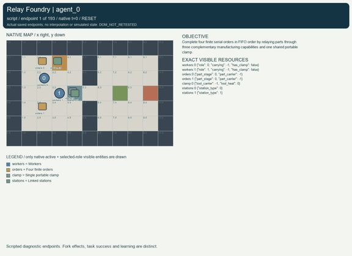
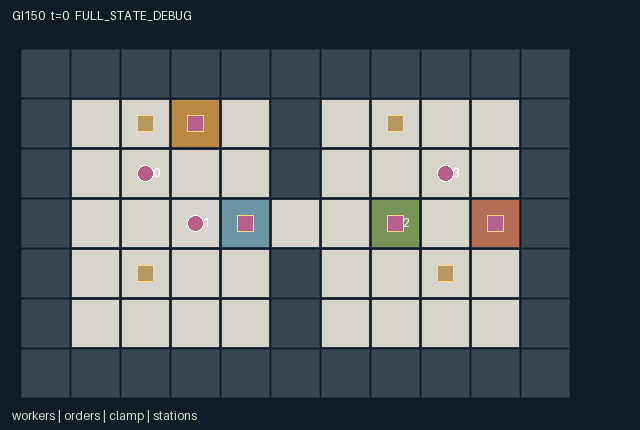

GI150 / SPATIAL
接力铸造厂
三种互补加工能力依次处理订单，共用一把可搬运夹具，串行完成实体工件交付。
Original saved demonstration
Recorded native state, often authored scripts or interventions; information scope and failures are preserved in the original provenance. This is a saved demonstration, not live browser play.

Release verification episode
Untrained uniform legal actions. Actual JAX state sampled along the full original episode; full-state debug camera. No human performance or learning claim.

Run this game
crucibles play --game 150
Start Python locally, then open the address printed by the terminal. Installation, multiplayer, takeover and keyboard controls →
Objective, rewards & ending
Exact task contract
{
"objective": "Complete four finite serial orders in FIFO order by relaying parts through three complementary manufacturing capabilities and one shared portable clamp.",
"natural_termination": "Terminate when queue_head equals 4, meaning all four physical parts are shipped. Otherwise truncate at 192 nonterminal steps.",
"interaction": "Part and clamp ownership, the one-cell west/east corridor, same-tick assistance at powered stations, clamp heat and serial shipping order jointly constrain teammates feasible progress.",
"observation_access": "Map and audit counts are public. Entity records are current Manhattan-radius-3 observations without wall occlusion. Own attributes are explicit; hidden entity fields use -1 plus a zero visibility bit. The renderer must use the same entity visibility, and public events are present in flat observations."
}Declared per-step reward bounds: -0.01 to 1.5. Observability: partially_observable.
Rules
- Roles 0, 1 and 2 alone cut, weld and calibrate respectively; everyone can carry, assist or ship.
- Each worker holds at most one part; the only clamp can travel with a part or separately.
- Powered work requires the role at its station, the cool clamp, and another worker assisting from an adjacent cell in the same tick.
- The clamp heats to three after welding or calibration; work requires heat zero at the start of the tick.
- Only the current serial queue head can ship; stages never reverse and finite parts never respawn.
- Entity sight is Manhattan radius three; the map, shipping count and audit counts are public.
- Joint reward is -0.002 per step, +0.1 per stage advance and +1 per shipment.
- Four shipments finish the episode; otherwise the horizon is 192.
Original mechanism document (historical status wording retained)
# Relay Foundry **AUTHOR_ONLY_NOT_EXECUTED.** This is initial parentless proposal 150, source attempt 0, in the frozen train-only window. Candidate runtime execution, numerical R0, replay, rendered animation, learning and scientific acceptance have not occurred in this authoring task. Python AST/syntax and declarative data-shape/schema screens are authoring checks only; they do not establish any game outcome. Native contract: A=4, O=153, U=13, H=192. Observations are float32 `[A,O]`, actions int32 `[A]`, rewards float32 `[A]`, masks bool `[A,U]`, and state leaves are fixed-shape int32/bool arrays. Source SHA-256: `c9dedefd7cfb5f8f316d9ffabf6862034fdc8f50c90aa8a10ad10d75a1de71a9`. ## Task and rules Complete four finite serial orders in FIFO order by relaying parts through three complementary manufacturing capabilities and one shared portable clamp. A part cannot be completed by one autonomous worker: role 0 must cut it, role 1 must weld it with a physically present assistant and the unique clamp, and role 2 must calibrate it under the same complementary condition. Role 3 can maintain transport and assistance while specialists stay near stations. Passing is to an explicitly selected adjacent role. A single pass transfers the donor's part if the receiver is empty and also transfers the donor's clamp; each asset can transfer at most once in the phase. A full receiver can receive the clamp alone. The clamp can also be deposited for later pickup, so holding it is an actual reservation that excludes other users. The wall splits the shop; its only gap is the central corridor. Couriers can relay at the gap, or specialists can travel with the clamp, at the expense of their worksite availability. A queue-focused strategy may rush part 0, whereas a pipeline may cut later parts while powered stages and shipping process the head. A pipeline that blocks the corridor or hoards the clamp can stop a teammate. Waiting to cool, assisting instead of moving one's own part, and deciding who carries the clamp therefore change feasible future joint actions. These are prospective strategic hypotheses, not measured policy behavior. The four fixed part identities persist; each is either on a cell, carried by exactly one role, or shipped. A carrier has at most one part, there is exactly one clamp, stages only increase, and `queue_head` equals the number of stage-4 parts. These are source-declared invariants for later numerical checks. End-of-step local visibility is refreshed from actual positions; it does not pretend that walls occlude sight. Shipped parts become inactive, and the public queue count retains their completion. Rule or task variants could relocate the narrow gap, reorder serial demand, change clamp cooling or remap the complementary roles. Such variants would alter transport and scheduling demands, but no variant generator, adaptation result or generalization result is claimed here. The current reset is deterministic and intentionally ignores its supplied key. ## Actions and simultaneous timing - `0`: Wait. - `1`: Move north. - `2`: Move east. - `3`: Move south. - `4`: Move west. - `5`: Pick up or drop a part on this cell. - `6`: Operate matching station or ship current FIFO head. - `7`: Assist an adjacent powered station. - `8`: Take or release the shared clamp on this cell. - `9`: Pass held part and clamp to adjacent agent 0. - `10`: Pass held part and clamp to adjacent agent 1. - `11`: Pass held part and clamp to adjacent agent 2. - `12`: Pass held part and clamp to adjacent agent 3. Movement rejects another agent's start-of-tick cell even if that agent moves; swaps are blocked. Among proposals to the same empty cell, the smallest (agent_id - t) mod A wins. Terrain or joint contention may make a legal movement attempt stationary. Out-of-range or masked actions deterministically become action 0. Legal interaction attempts may still do nothing when their resolution-phase prerequisites are absent; the action labels state their intended operation. All roles remain active until joint termination, so no eliminated role is silently deleted. Terminal masks retain action 0. ## Observation and renderer contract Map and audit counts are public. Entity records are current Manhattan-radius-3 observations without wall occlusion. Own attributes are explicit; hidden entity fields use -1 plus a zero visibility bit. The renderer must use the same entity visibility, and public events are present in flat observations. - Columns `0:6` (self): Own role, x, y, carried part id (-1 empty), clamp-held flag, clock. - Columns `6:11` (public): FIFO head, stage-advance count this tick, transfer count this tick, shipping bell, joint episode done. - Columns `11:35` (local): Four agent records in id order: x,y,role,carried part id,clamp flag,visible. Hidden fields -1; final flag 0. - Columns `35:55` (local): Four part records in serial order: x,y,assembly stage,carrier id,visible. Only active parts within Manhattan radius 3. - Columns `55:60` (local): Clamp record: x,y,carrier id,heat,visible; hidden values -1. - Columns `60:76` (local): Four station records in station order: x,y,type,visible; radius 3. - Columns `76:153` (public): Static 7 by 11 public tile map flattened row-major yx; codes match world legend. All coordinates are integer `[x,y]`; the tile map uses `[y,x]` indexing and a downward y axis. `scene.json` binds these actual map, position, active, visibility, attribute and event paths. It contains no invented motion, external image, executable markup or policy-only information. Public event channels are also present in observations. Counters and persistent levels are labeled separately from per-step events. Full-state inspection must be distinguished from role-visible playback. A real trajectory and its animation remain to be produced by the trusted implementation process. ## Termination, rewards and conservation Terminate when queue_head equals 4, meaning all four physical parts are shipped. Otherwise truncate at 192 nonterminal steps. A nonterminal call advances the int32 clock once. Natural completion takes precedence over the horizon. Terminal raw calls preserve every leaf, observation and clock, return zero rewards and all dones true, and preserve terminated/truncated. No episode reset occurs in raw_step. Declared finite observation bounds are -1..192; reward bounds are -0.01..1.5. These are game data bounds, not outcome thresholds. Rule-specific reward terms and conservation claims above are literal source design claims; they remain untested numerically. `manifest.json` declares every state leaf and safe structural invariants; source-dependent accounting identities require independent execution review. ## Source-line evidence - Spatial state and visibility: `candidate.py:12` — `def refresh(self, s):` - Finite initial materials, map and roles: `candidate.py:29` — `def reset(self, key):` - Attempt masks and absorbing no-op: `candidate.py:59` — `def legal_actions(self, s):` - Conservative simultaneous collision resolution: `candidate.py:69` — `def move(self, s, actions):` - Ownership transfers: `candidate.py:94` — `original = s["part_carrier"]` - Complementary powered stages: `candidate.py:125` — `for role in range(3):` - FIFO delivery and natural completion: `candidate.py:136` — `head = jnp.clip(s["queue_head"], 0, 3)` - Raw terminal preservation: `candidate.py:150` — `s = jax.tree.map(lambda old, new: jnp.where(state["episode_done"], old, new), state, s)` - Literal flat observation construction: `candidate.py:154` — `def observe(self, s):` ## Prospective playthroughs and single-action interventions `playthrough.json` contains literal source-derived scripts and paired branches that change exactly one role action at one decision. Each script is explicitly `UNEXECUTED_AUTHOR_HYPOTHESIS`; its action dimensions and ranges were checked as data, while runtime legality, actual trajectories, numerical parity and success were not checked. No script result, score, learning gain or browser acceptance is invented. The paired hypotheses identify state paths for later comparison and do not substitute for measured causal traces. ## Community interface and provenance The supplied official JaxMARL README informed the separation between the homogeneous array kernel and a later agent-keyed parallel API with `__all__`; no upstream environment was copied. Pgx informed explicit legality, raw terminal state and explicit-key provenance, rather than importing a board-game implementation. Craftax supplied a reference for spatial objects, inventories and persistent consequences; this game is an original multiplayer design. PureJaxRL is an algorithm implementation reference, not a game library. The supplied Craftax recurrent PPO baseline credits PureJaxRL; its training/network/wrapper code was not copied, run or substituted for the frozen learner. Reference snapshots are hash-frozen in `author_input_freeze.json` and the assigned request: [JaxMARL README](https://github.com/bold-lab-ai/JaxMARL/blob/main/README.md), [Pgx README](https://github.com/sotetsuk/pgx/blob/main/README.md), [Craftax README](https://github.com/MichaelTMatthews/Craftax/blob/main/README.md), [PureJaxRL README](https://github.com/luchris429/purejaxrl/blob/main/README.md), and [Craftax recurrent PPO baseline](https://github.com/MichaelTMatthews/Craftax_Baselines/blob/main/ppo_rnn.py). API/design ideas only; copied upstream code: none. The public JaxMARL adapter belongs to the trusted integration layer: it should map fixed ids `agent_0` through `agent_3` to the existing array boundary, expose masks and set done `__all__` from `done_all`. No agent dictionary adapter or new learner is smuggled into this restricted one-class kernel. Source integer categories use int32, flags use bool, and the supplied uint32 reset key is external provenance rather than a hidden mutable state object. The source/manifest/scene hashes are bound in `generation_record.json`; `author_input_freeze.json` binds the verified frozen author inputs. No prior candidate, result, replay, rank, training feedback or final-test material was read. No numeric candidate execution, CSD3 operation, model download or background task was performed. Initial-window accounting remains four parentless proposals 150..153, 154 used or reserved of the existing 512 cap, with later windows unchanged. Authoring and visualization support alone do not establish learnability, non-isomorphism, generalization or meta-learning.
Commands
Roles & abilities
agent_0 Cutter: uniquely advances raw parts to stage 1
agent_1 Welder: uniquely advances stage 1 to stage 2 using shared clamp and assistant
agent_2 Calibrator: uniquely advances stage 2 to stage 3 using shared clamp and assistant
agent_3 Runner and assistant: transports, powers linked stations and ships queue orders
Observation permissions
Training receives only the original observation rows. Role cameras use declared visibility; debug cameras are explicitly marked. Local benchmark records log debug exposure and role takeover history.
Exact observation layout
[
{
"slice": [
0,
6
],
"visibility": "self",
"meaning": "Own role, x, y, carried part id (-1 empty), clamp-held flag, clock."
},
{
"slice": [
6,
11
],
"visibility": "public",
"meaning": "FIFO head, stage-advance count this tick, transfer count this tick, shipping bell, joint episode done."
},
{
"slice": [
11,
35
],
"visibility": "local",
"meaning": "Four agent records in id order: x,y,role,carried part id,clamp flag,visible. Hidden fields -1; final flag 0."
},
{
"slice": [
35,
55
],
"visibility": "local",
"meaning": "Four part records in serial order: x,y,assembly stage,carrier id,visible. Only active parts within Manhattan radius 3."
},
{
"slice": [
55,
60
],
"visibility": "local",
"meaning": "Clamp record: x,y,carrier id,heat,visible; hidden values -1."
},
{
"slice": [
60,
76
],
"visibility": "local",
"meaning": "Four station records in station order: x,y,type,visible; radius 3."
},
{
"slice": [
76,
153
],
"visibility": "public",
"meaning": "Static 7 by 11 public tile map flattened row-major yx; codes match world legend."
}
]Entity visibility & attributes
[
{
"id": "workers",
"kind": "agent",
"count": 4,
"position": [
"agent_pos"
],
"active": [
"agent_active"
],
"visibility": [
"agent_visible"
],
"attributes": [
{
"state_path": [
"role"
],
"meaning": "Unique complementary capability, indexed 0 to 3",
"display": "category"
},
{
"state_path": [
"carrying"
],
"meaning": "Carried part id; -1 is empty",
"display": "category"
},
{
"state_path": [
"has_clamp"
],
"meaning": "Currently holds the only clamp",
"display": "flag"
}
]
},
{
"id": "orders",
"kind": "object",
"count": 4,
"position": [
"part_pos"
],
"active": [
"part_active"
],
"visibility": [
"part_visible"
],
"attributes": [
{
"state_path": [
"part_stage"
],
"meaning": "0 raw, 1 cut, 2 welded, 3 calibrated, 4 shipped",
"display": "category"
},
{
"state_path": [
"part_carrier"
],
"meaning": "Carrier id; -1 means on ground or shipped",
"display": "category"
}
]
},
{
"id": "clamp",
"kind": "object",
"count": 1,
"position": [
"tool_pos"
],
"active": [
"tool_active"
],
"visibility": [
"tool_visible"
],
"attributes": [
{
"state_path": [
"tool_carrier"
],
"meaning": "Clamp holder; -1 is on ground",
"display": "category"
},
{
"state_path": [
"tool_heat"
],
"meaning": "Remaining cooling ticks after powered use",
"display": "bar"
}
]
},
{
"id": "stations",
"kind": "landmark",
"count": 4,
"position": [
"station_pos"
],
"active": [
"station_active"
],
"visibility": [
"station_visible"
],
"attributes": [
{
"state_path": [
"station_type"
],
"meaning": "0 cutter, 1 welder, 2 calibrator, 3 shipping",
"display": "category"
}
]
}
]Actual verification & provenance
Per-game execution receipt
{
"game": "gi150",
"status": "PASS",
"verification_revision": 2,
"source_sha256": "c9dedefd7cfb5f8f316d9ffabf6862034fdc8f50c90aa8a10ad10d75a1de71a9",
"seed": 20261101,
"runtime": {
"jax": "0.4.38",
"numpy": "1.26.4",
"devices": [
"TFRT_CPU_0"
]
},
"dimensions": {
"num_agents": 4,
"observation_size": 153,
"num_actions": 13,
"max_steps": 192
},
"checks": {
"eager_reset": {
"status": "PASS",
"seconds": 1.7552547454833984
},
"observation_spaces_legal_masks": {
"status": "PASS",
"seconds": 0.6976943016052246
},
"eager_step": {
"status": "PASS",
"seconds": 2.363164186477661
},
"jit_reset": {
"status": "PASS",
"seconds": 0.2190556526184082
},
"jit_step": {
"status": "PASS",
"seconds": 1.3035528659820557
},
"eager_jit_integer_parity_float_measurement": {
"status": "PASS",
"seconds": 0.0015034675598144531
},
"jit_vmap_reset": {
"status": "PASS",
"seconds": 0.2643873691558838
},
"jit_vmap_step": {
"status": "PASS",
"seconds": 1.6408073902130127
},
"outer_autoreset_api": {
"status": "PASS",
"seconds": 1.5704052448272705
},
"full_original_horizon_episode_and_render": {
"status": "PASS",
"seconds": 1.4556934833526611
}
},
"human_scores": null,
"browser_controls": "PENDING",
"failures": [],
"elapsed_seconds": 12.020294189453125,
"float_parity_max_abs": 0.0,
"numerical_parity": "EXACT",
"raw_terminal_absorbing": "PASS",
"terminal_outer_reset": "PASS",
"episode_steps": 192,
"scripted_random_returns": [
-0.3840000182390213,
-0.3840000182390213,
-0.3840000182390213,
-0.3840000182390213
],
"terminal": true,
"demo_information": "FULL_STATE_DEBUG",
"demo_frames": 25,
"render_roles_checked": 4
}Chromium control verification
{
"game": "gi150",
"status": "PASS",
"human_scores": null,
"engineering": true,
"checks": [
"catalog_selected_and_real_native_reset",
"keyboard_native_direction_command",
"dom_queue_and_native_step",
"second_participant_ownership_and_native_joint_step",
"all_roles_individually_controllable_no_role_cap",
"explicit_debug_camera",
"release_to_pure_ai_without_reset",
"close_session_preserves_log"
],
"ui_sha256": "96243f9de144b80b5e20a114330e2206bdcd58d3efc9c6f13bbc08b95cacc14d",
"keyboard_action_id": 1,
"seconds": 5.097482681274414
}Original identity and file hashes
{
"id": 150,
"key": "gi150",
"title": "接力铸造厂",
"summary": "三种互补加工能力依次处理订单，共用一把可搬运夹具，串行完成实体工件交付。",
"tags": [
"专长互补",
"工序接力"
],
"family": "spatial",
"dimensions": {
"num_agents": 4,
"observation_size": 153,
"num_actions": 13,
"max_steps": 192
},
"source_sha256": "c9dedefd7cfb5f8f316d9ffabf6862034fdc8f50c90aa8a10ad10d75a1de71a9",
"manifest_sha256": "aa6ca9c5ee2db13b299fb6dc91f1bd11227c69c3c2ca091a1a0541a1df2e46cc",
"files": [
{
"file": "candidate.py",
"sha256": "c9dedefd7cfb5f8f316d9ffabf6862034fdc8f50c90aa8a10ad10d75a1de71a9",
"bytes": 11537,
"origin": "work/exp_2/game_incubator_v3/community_games222_225_visualization_root222_v1/native154_candidate/registry/v2/games/game-v3-00150/candidate.py"
},
{
"file": "manifest.json",
"sha256": "aa6ca9c5ee2db13b299fb6dc91f1bd11227c69c3c2ca091a1a0541a1df2e46cc",
"bytes": 12729,
"origin": "work/exp_2/game_incubator_v3/community_games222_225_visualization_root222_v1/native154_candidate/registry/v2/games/game-v3-00150/manifest.json"
},
{
"file": "scene.json",
"sha256": "02eef8b2cb76ff4e101d52580ed663cc7fc37fbe61e40053f5777f5905e2c594",
"bytes": 7090,
"origin": "work/exp_2/game_incubator_v3/community_games222_225_visualization_root222_v1/native154_candidate/registry/v2/games/game-v3-00150/scene.json"
},
{
"file": "mechanism.md",
"sha256": "37558bfc560419eaa9293befbda480c9f4cf8c3bba4b4f6fffc962e2483c75d0",
"bytes": 10526,
"origin": "work/exp_2/game_incubator_v3/sources/game-v3-00150/attempt_00/mechanism.md"
},
{
"file": "playthrough.json",
"sha256": "974dab61c277452c43f1e1a4edaaf60084b8572c61a436390172e97b6593810b",
"bytes": 4504,
"origin": "work/exp_2/game_incubator_v3/sources/game-v3-00150/attempt_00/playthrough.json"
}
],
"original_status": "NATIVE154_REFERENCE",
"original_saved_replay": true,
"release_validation": "PASS",
"human_scores": null,
"browser_validation": "PASS"
}